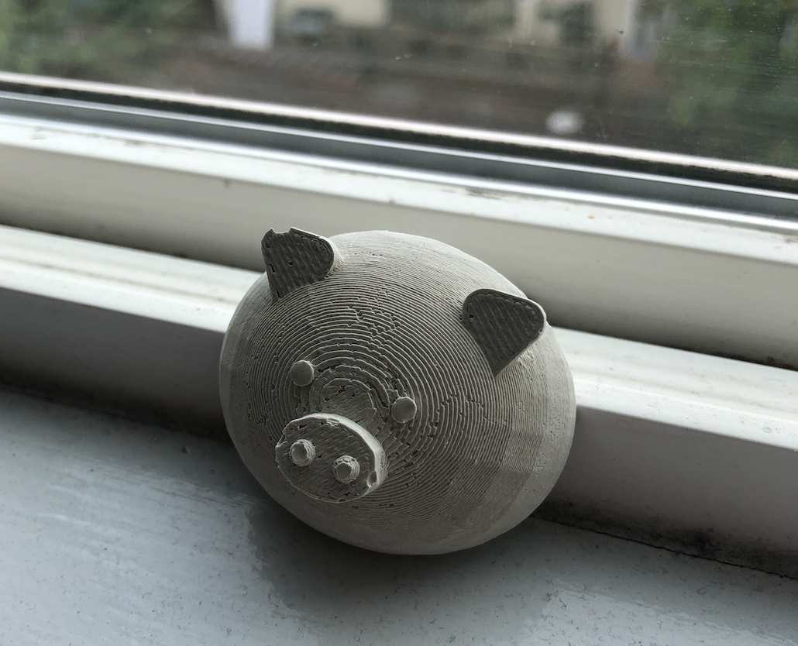
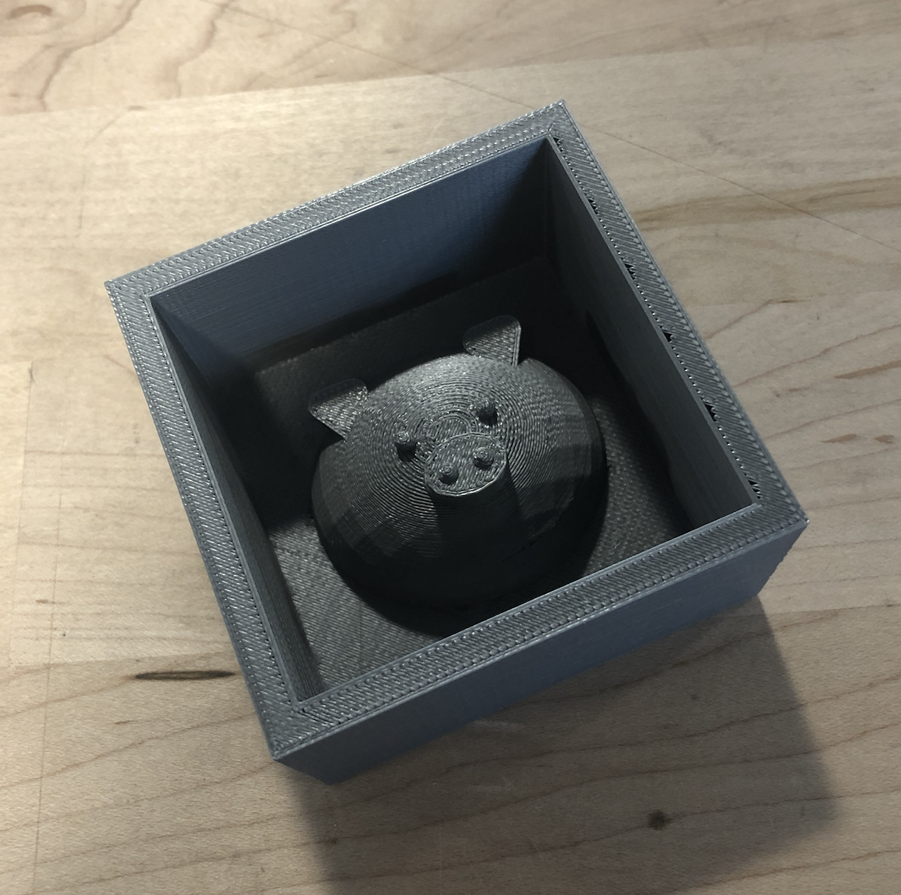
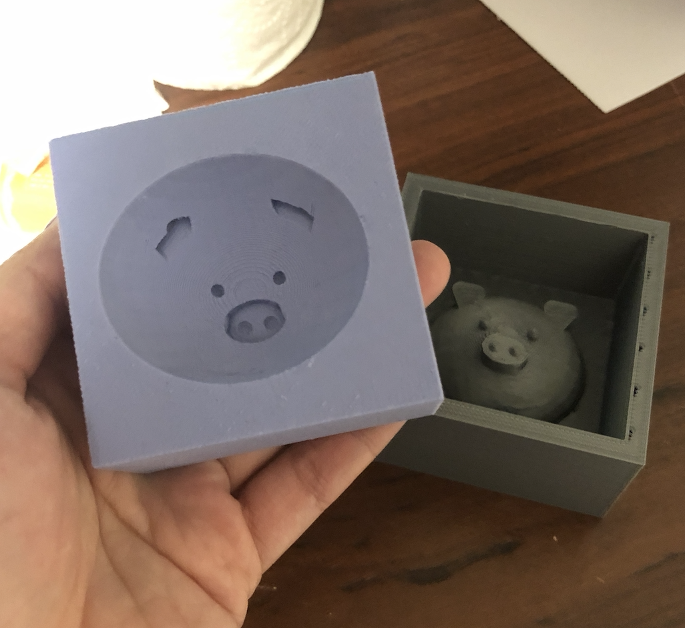
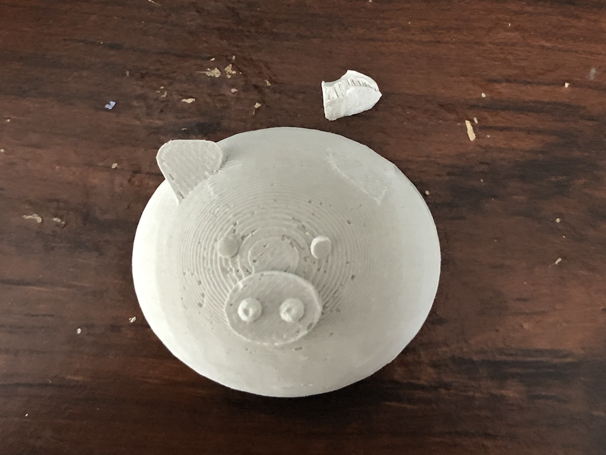
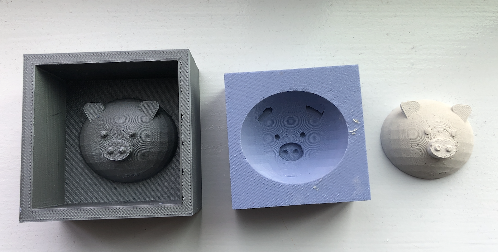

Assignment 6
Molding and Casting Piggy
Tools: Rhino, 3D printer, oomoo (silicone), plaster, mixing materials

Process
To honor my zodiac animal, I made a piggy mold. I used Rhino to make the CAD because for some reason, it is more intuitive for me to use. I started out making a full pig's head and then I cut it in half so that I will save time to 3D print and also I didn't need the whole head. I decided to 3D print because frankly, I am a broke grad student and didn't want to spend anymore money on this one assignment.
I was playing with the idea of potentially just printing out the pig's face and then dip it in a silicone mix bed but then I figured better safe than sorry so I created a box around it.
To be honest, the most trouble I had doing this assignment was still printing!!! WHY! I kept having problems when I 3D print and this time, I learned that having proper infills is important when you model comes out of a shape because my box had a bunch of holes since I adjusted the infill to 10% but also had it as fast honeycomb. I changed it to 20% with rectilinear and it covered the top layer pretty well. Also, selecting the correct profile in Simplify3D is critical to making sure the file works into the 3D printer. There were just a bunch of little accidents that could have occurred but good thing, I was watching it for a while before I left to make sure it kicks off correctly!
Alas, the mold is done!
The next step was to make the silicone mixture and pour it into the mold. This part was so messy but using the ratio of 1:1 turned out nicely. Although the instructions said it was supposed to turn lavendar... it was more like blueish.
I really like this part. It was so satisfying to watch it cover the mold nicely. I tucked it away for a little bit over 6 hours, in room temperature.
The mold came out nicely! It was a little bit of a tug to pull the silicone out of the mold. I was scared of yanking too hard and potentially ripping it. I used a knife so go along the sides of the box to give it some air. Then slowly using the handle of a spoon to carefully take it out. Surprisingly, it wasn't as delicate as I thought and I was glad that I made the mold big enough that the silicone base is pretty sturdy. One thing that I was concerned about is when I cast the plaster, it would not flow into the ears of the pig since it seems a bit fragile and not as well connected as the rest.
The next step was to cast it with plaster. One problem I encountered was that I mixed the plaster wrong. For some reason, I thought that ratio was 1:1 so it came out really runny. So I consulted slack and tried 3:1 (plaster:water) and it had more consistency. I let the plaster to set for about 20 minutes and it was ready to come out!
My worries were confirmed when the pig came out with missing part of its ears. At first I thought that it was because I peeled it off too hard so it clip off the ears but after 2 molds, I think it is because the plaster didn't go into the ears. For the next molds, I started to move the mold in circular motion after pouring in the plaster so that it would flow into the ear edges. This sort of worked but for some reason, one of the ears is just kind of wacky. I think something I would have to keep in mind next time is to make the model more connected because the ear was just pointing out too much.
Near the end of my plaster casting, my silicone mold was actually starting to tear a little and I think it's because whenever I take out the plaster pig, I pull on the ears a little and it tugs on the edges of the silicone mold and doing that repetitively wore it out.
Kit Design

Kit consists of four piggies! (and some broken ones)
A mold to make a silicone mold to make a plaster pig